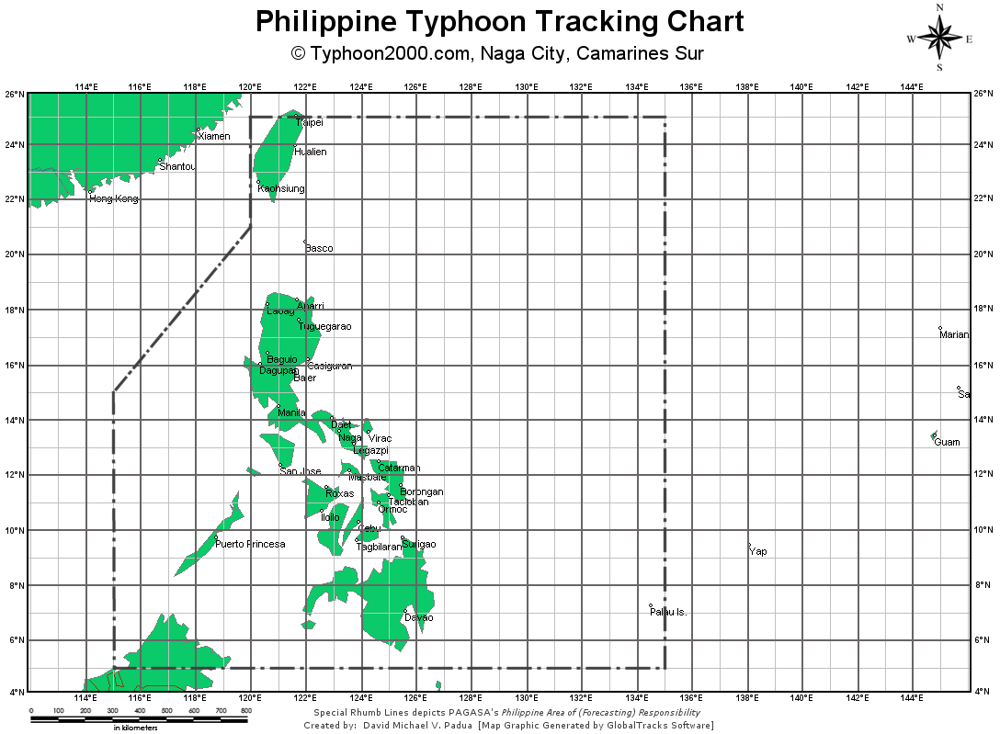

Informations about a Typhoon

What is typhoon?
Typhoons are a combination of clouds and thunderstorms that produce a confined mix of air and water beneath the position of a tropical or subtropical ocean floor.
Currently, there is 3 main identity of a typhoon: a hurricane, a typhoon, and a cyclone. "What makes them different?" you may ask. The difference between the 3 is their place of origin! Typhoon originates from the tropical or subtropical areas, like the Pacific Ocean which mostly affects the Southeast Asian region. A cyclone originates from the Indian region, this mostly affects the areas in South- Asia. Lastly, the origin of a hurricane is the American and Caribbean region, it mostly affects the said place.
Did you know, that in the Philippines we experience multiple typhoons in a year? An average of 20 typhoons hit our country yearly, this causes a lot of damage to the houses and livelihoods of the affected people. Perhaps one of the most distractive typhoons that hit The Philippines is the Typhoon Ketsana, locally known as typhoon Ondoy. Scroll down to know more.
What are the classifications of a Typhoon?
Several factors are considered when determining a storm's classification. The wind speed is one of the most important factors to consider. The classifications differ in terms of wind speed, as illustrated in the image above.
In addition, each classification has its own signal number. These signals serve as a guide for the people and the government in determining what to do in response to the typhoon.
How do typhoons form?
Typhoons frequently originate as a result of air sitting on top of warm ocean water forming a spiral of water droplets providing an upward trajectory to the clouds. As a result of the spiral collected by the merge of wind and warm water, we are able to have moisture forms of air. When in creation, the warm moist air is then replaced with cold air and this tends to impact the water below causing pressure and acceleration to the whirl and air making the upward motion of the typhoon. The typhoon's wind and clouds rotate counterclockwise with the center area called the "eye of the typhoon". For a deeper understanding refer to the image below.
As can be seen, warm water is required for the creation of typhoons. The Pacific Ocean is the warmest body of water on the planet. Because of our country's geographic location next to the Pacific Ocean, we encounter more typhoons than any other region of the world.
The Path of the Typhoon and the Factors that Affected it
PAGASA, the Philippines' official meteorological organization, monitors weather occurrences in the Philippine Area of Responsibility (PAR) in the Northwestern Pacific. Significant meteorological disturbances, particularly tropical storms that enter or form in the PAR, are given Philippine names. Typhoon Ketsana, for example, was renamed Bagyong Ondoy when it approached the PAR.
This is the PAR, as shown in the image above. It is possible that you will realize that it incorporates land from other countries. Remember, this does not imply that their area is part of ours; the PAR is simply for us to know if there is a typhoon threat.
The image shows the path of the Typhoon Ketsana (Ondoy). There you will see it's path, coordinates, and classification along the way.
Both landforms and waterforms affected the perfomance of the typhoon. First to consider is the ocean, because of the Pacific Ocean, the typhoon Ketsana was formed. The sea also contributed to this because the typhoon dveloped through it. Next is the Mountains, fortunately, the mountain stopped the strong wind and rain from the typhoon Ondoy. This exaplins why there is lesser damages in the northern Luzon area. These are just some examples of land and water forms which affected the typhoon.